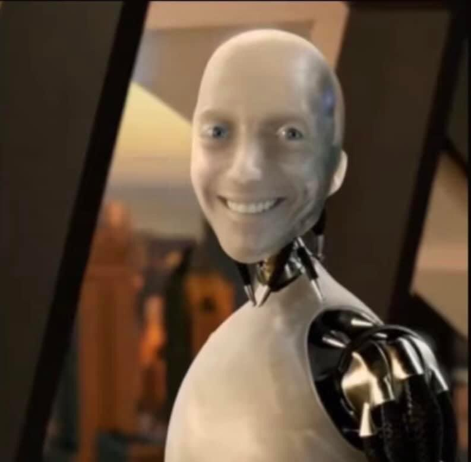

Visual Media
Ai Automation

PNG File
This png file shows the robot from the movie "iRobot", but smiling. I like when people choose to remake images to make them relatable with just a simple caption. But this image highlights my interests for Ai and automation. There are mixed views and opinions about Ai. Alot of back and forth on the dangers of it and the wonders it will do for the advancement of civilization. Two things can be true at the same time, right? Ultimately, I am interested to see how Ai developes in the future. And no, this assignment was not assisted with Ai.